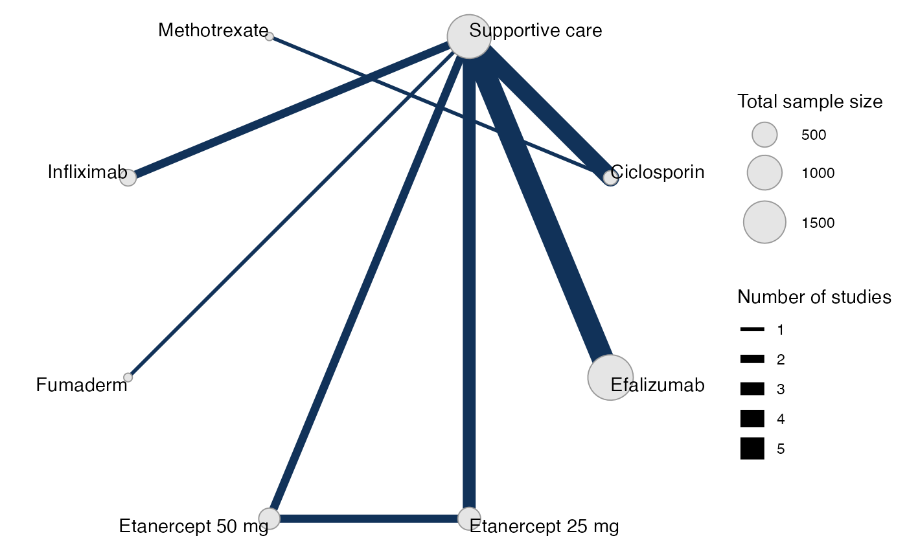
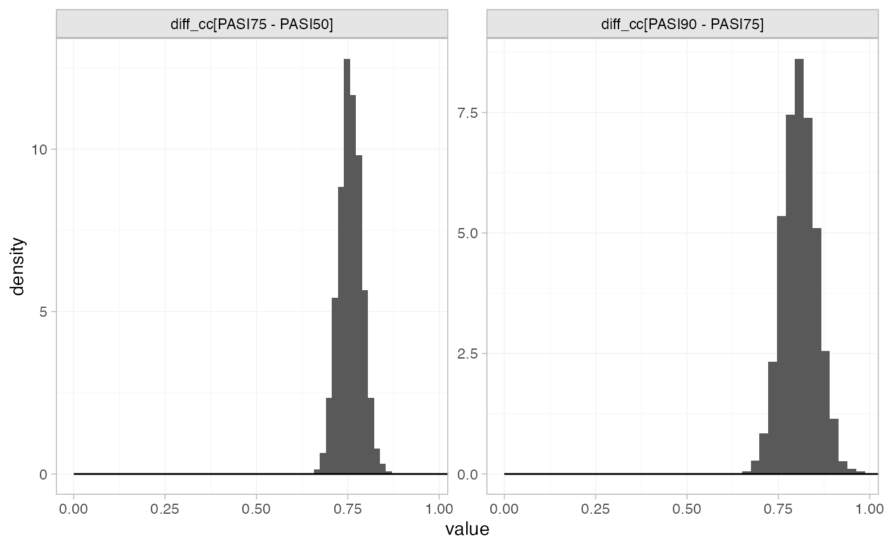
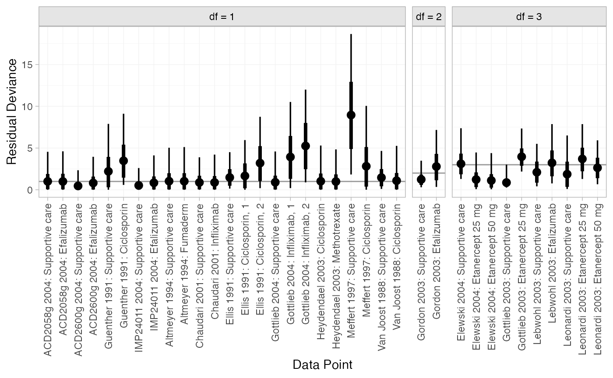
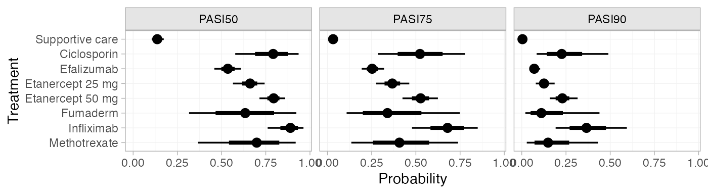

Example: Plaque psoriasis HTA report
Source:vignettes/example_hta_psoriasis.Rmd
example_hta_psoriasis.Rmd
library(multinma)
options(mc.cores = parallel::detectCores())#> For execution on a local, multicore CPU with excess RAM we recommend calling
#> options(mc.cores = parallel::detectCores())
#>
#> Attaching package: 'multinma'
#> The following objects are masked from 'package:stats':
#>
#> dgamma, pgamma, qgammaThis vignette describes the analysis of treatments for
moderate-to-severe plaque psoriasis from an HTA report (Woolacott et al. 2006), replicating the
analysis in NICE Technical Support Document 2 (Dias et al. 2011). The
data are available in this package as hta_psoriasis:
head(hta_psoriasis)
#> studyn studyc year trtn trtc sample_size PASI50 PASI75 PASI90
#> 1 1 Elewski 2004 1 Supportive care 193 12 5 1
#> 2 1 Elewski 2004 2 Etanercept 25 mg 196 59 46 21
#> 3 1 Elewski 2004 3 Etanercept 50 mg 194 54 56 40
#> 4 2 Gottlieb 2003 1 Supportive care 55 5 1 0
#> 5 2 Gottlieb 2003 2 Etanercept 25 mg 57 23 11 6
#> 6 3 Lebwohl 2003 1 Supportive care 122 13 5 1Outcomes are ordered multinomial success/failure to achieve 50%, 75%, or 90% reduction in symptoms on the Psoriasis Area and Severity Index (PASI) scale. Some studies report ordered outcomes at all three cutpoints, others only one or two:
dplyr::filter(hta_psoriasis, studyc %in% c("Elewski", "Gordon", "ACD2058g", "Altmeyer"))
#> studyn studyc year trtn trtc sample_size PASI50 PASI75 PASI90
#> 1 1 Elewski 2004 1 Supportive care 193 12 5 1
#> 2 1 Elewski 2004 2 Etanercept 25 mg 196 59 46 21
#> 3 1 Elewski 2004 3 Etanercept 50 mg 194 54 56 40
#> 4 5 Gordon 2003 1 Supportive care 187 18 8 NA
#> 5 5 Gordon 2003 4 Efalizumab 369 118 98 NA
#> 6 6 ACD2058g 2004 1 Supportive care 170 25 NA NA
#> 7 6 ACD2058g 2004 4 Efalizumab 162 99 NA NA
#> 8 10 Altmeyer 1994 1 Supportive care 51 NA 1 NA
#> 9 10 Altmeyer 1994 6 Fumaderm 49 NA 12 NAHere, the outcome counts are given as “exclusive” counts. That is, for a study reporting all outcomes (e.g. Elewski), the counts represent the categories 50 < PASI < 75, 75 < PASI < 90, and 90 < PASI < 100, and the corresponding columns are named by the lower end of the interval. Missing values are used where studies only report a subset of the outcomes. For a study reporting only two outcomes, say PASI50 and PASI75 as in Gordon, the counts represent the categories 50 < PASI < 75 and 75 < PASI < 100. For a study reporting only one outcome, say PASI70 as in Altmeyer, the count represents 70 < PASI < 100. We also need the count for the lowest category (i.e. no higher outcomes achieved), which is equal to the sample size minus the counts in the other observed categories.
Setting up the network
We begin by setting up the network. We have arm-level ordered
multinomial count data, so we use the function
set_agd_arm(). The function multi() helps us
to specify the ordered outcomes correctly.
pso_net <- set_agd_arm(hta_psoriasis,
study = paste(studyc, year),
trt = trtc,
r = multi(r0 = sample_size - rowSums(cbind(PASI50, PASI75, PASI90), na.rm = TRUE),
PASI50, PASI75, PASI90,
inclusive = FALSE,
type = "ordered"))
pso_net
#> A network with 16 AgD studies (arm-based).
#>
#> ------------------------------------------------------- AgD studies (arm-based) ----
#> Study Treatment arms
#> ACD2058g 2004 2: Supportive care | Efalizumab
#> ACD2600g 2004 2: Supportive care | Efalizumab
#> Altmeyer 1994 2: Supportive care | Fumaderm
#> Chaudari 2001 2: Supportive care | Infliximab
#> Elewski 2004 3: Supportive care | Etanercept 25 mg | Etanercept 50 mg
#> Ellis 1991 3: Supportive care | Ciclosporin | Ciclosporin
#> Gordon 2003 2: Supportive care | Efalizumab
#> Gottlieb 2003 2: Supportive care | Etanercept 25 mg
#> Gottlieb 2004 3: Supportive care | Infliximab | Infliximab
#> Guenther 1991 2: Supportive care | Ciclosporin
#> ... plus 6 more studies
#>
#> Outcome type: ordered (4 categories)
#> ------------------------------------------------------------------------------------
#> Total number of treatments: 8
#> Total number of studies: 16
#> Reference treatment is: Supportive care
#> Network is connectedPlot the network structure.
plot(pso_net, weight_edges = TRUE, weight_nodes = TRUE) +
# Nudge the legend over
ggplot2::theme(legend.box.spacing = ggplot2::unit(0.75, "in"),
plot.margin = ggplot2::margin(0.1, 0, 0.1, 0.75, "in"))
Meta-analysis models
We fit both fixed effect (FE) and random effects (RE) models.
Fixed effect meta-analysis
First, we fit a fixed effect model using the nma()
function with trt_effects = "fixed", using a probit link
function link = "probit". We use \(\mathrm{N}(0, 10^2)\) prior distributions
for the treatment effects \(d_k\), and
\(\mathrm{N}(0, 100^2)\) prior
distributions for the study-specific intercepts \(\mu_j\). We can examine the range of
parameter values implied by these prior distributions with the
summary() method:
summary(normal(scale = 10))
#> A Normal prior distribution: location = 0, scale = 10.
#> 50% of the prior density lies between -6.74 and 6.74.
#> 95% of the prior density lies between -19.6 and 19.6.
summary(normal(scale = 100))
#> A Normal prior distribution: location = 0, scale = 100.
#> 50% of the prior density lies between -67.45 and 67.45.
#> 95% of the prior density lies between -196 and 196.We also need to specify prior distributions for the latent cutpoints
\(c_\textrm{PASI75}\) and \(c_\textrm{PASI90}\) on the underlying scale
- here the PASI standardised mean difference due to the probit link (the
cutpoint \(c_\textrm{PASI50}=0\)). To
make these easier to reason about, we actually specify priors on the
differences between adjacent cutpoints, e.g. \(c_\textrm{PASI90} - c_\textrm{PASI75}\) and
\(c_\textrm{PASI75} -
c_\textrm{PASI50}\). These can be given any positive-valued prior
distribution, and Stan will automatically impose the necessary ordering
constraints behind the scenes. We choose to give these implicit flat
priors flat().
The model is fitted using the nma() function.
pso_fit_FE <- nma(pso_net,
trt_effects = "fixed",
link = "probit",
prior_intercept = normal(scale = 100),
prior_trt = normal(scale = 10),
prior_aux = flat())
#> Note: Setting "Supportive care" as the network reference treatment.Basic parameter summaries are given by the print()
method:
pso_fit_FE
#> A fixed effects NMA with a ordered likelihood (probit link).
#> Inference for Stan model: ordered_multinomial.
#> 4 chains, each with iter=2000; warmup=1000; thin=1;
#> post-warmup draws per chain=1000, total post-warmup draws=4000.
#>
#> mean se_mean sd 2.5% 25% 50% 75% 97.5% n_eff
#> d[Ciclosporin] 1.92 0.01 0.34 1.28 1.68 1.90 2.14 2.64 1627
#> d[Efalizumab] 1.19 0.00 0.06 1.08 1.15 1.19 1.23 1.30 2127
#> d[Etanercept 25 mg] 1.51 0.00 0.10 1.32 1.45 1.51 1.57 1.70 2232
#> d[Etanercept 50 mg] 1.92 0.00 0.10 1.72 1.86 1.92 1.99 2.11 2119
#> d[Fumaderm] 1.50 0.01 0.49 0.62 1.16 1.46 1.79 2.52 2554
#> d[Infliximab] 2.33 0.01 0.26 1.85 2.15 2.32 2.51 2.86 2596
#> d[Methotrexate] 1.61 0.01 0.45 0.74 1.31 1.60 1.90 2.53 1926
#> lp__ -3405.08 0.08 3.57 -3412.88 -3407.32 -3404.80 -3402.43 -3399.20 1765
#> cc[PASI50] 0.00 NaN 0.00 0.00 0.00 0.00 0.00 0.00 NaN
#> cc[PASI75] 0.76 0.00 0.03 0.70 0.74 0.76 0.78 0.82 5825
#> cc[PASI90] 1.57 0.00 0.05 1.46 1.53 1.57 1.60 1.67 6099
#> Rhat
#> d[Ciclosporin] 1
#> d[Efalizumab] 1
#> d[Etanercept 25 mg] 1
#> d[Etanercept 50 mg] 1
#> d[Fumaderm] 1
#> d[Infliximab] 1
#> d[Methotrexate] 1
#> lp__ 1
#> cc[PASI50] NaN
#> cc[PASI75] 1
#> cc[PASI90] 1
#>
#> Samples were drawn using NUTS(diag_e) at Wed Aug 30 10:58:47 2023.
#> For each parameter, n_eff is a crude measure of effective sample size,
#> and Rhat is the potential scale reduction factor on split chains (at
#> convergence, Rhat=1).Note: the treatment effects are the opposite sign to those in TSD 2 (Dias et al. 2011). This is because we parameterise the linear predictor as \(\mu_j + d_k + c_m\), rather than \(\mu_j + d_k - c_m\). The interpretation here thus follows that of a standard binomial probit (or logit) regression; SMDs (or log ORs) greater than zero mean that the treatment increases the probability of an event compared to the comparator (and less than zero mean a reduction in probability). Here higher outcomes are positive, and all of the active treatments are estimated to increase the response (i.e. a greater reduction) on the PASI scale compared to the network reference (supportive care).
By default, summaries of the study-specific intercepts \(\mu_j\) are hidden, but could be examined
by changing the pars argument:
The prior and posterior distributions can be compared visually using
the plot_prior_posterior() function:
plot_prior_posterior(pso_fit_FE)
Focusing specifically on the cutpoints we see that these are highly identified by the data, which is why the implicit flat priors work for these parameters.
plot_prior_posterior(pso_fit_FE, prior = "aux")
Random effects meta-analysis
We now fit a random effects model using the nma()
function with trt_effects = "random". Again, we use \(\mathrm{N}(0, 10^2)\) prior distributions
for the treatment effects \(d_k\),
\(\mathrm{N}(0, 100^2)\) prior
distributions for the study-specific intercepts \(\mu_j\), implicit flat prior distributions
for the latent cutpoints, and we additionally use a \(\textrm{half-N}(2.5^2)\) prior for the
heterogeneity standard deviation \(\tau\). We can examine the range of
parameter values implied by these prior distributions with the
summary() method:
summary(normal(scale = 10))
#> A Normal prior distribution: location = 0, scale = 10.
#> 50% of the prior density lies between -6.74 and 6.74.
#> 95% of the prior density lies between -19.6 and 19.6.
summary(normal(scale = 100))
#> A Normal prior distribution: location = 0, scale = 100.
#> 50% of the prior density lies between -67.45 and 67.45.
#> 95% of the prior density lies between -196 and 196.
summary(half_normal(scale = 2.5))
#> A half-Normal prior distribution: location = 0, scale = 2.5.
#> 50% of the prior density lies between 0 and 1.69.
#> 95% of the prior density lies between 0 and 4.9.Fitting the RE model
pso_fit_RE <- nma(pso_net,
trt_effects = "random",
link = "probit",
prior_intercept = normal(scale = 100),
prior_trt = normal(scale = 10),
prior_aux = flat(),
prior_het = half_normal(scale = 2.5),
adapt_delta = 0.99)#> Note: Setting "Supportive care" as the network reference treatment.Basic parameter summaries are given by the print()
method:
pso_fit_RE
#> A random effects NMA with a ordered likelihood (probit link).
#> Inference for Stan model: ordered_multinomial.
#> 4 chains, each with iter=5000; warmup=2500; thin=1;
#> post-warmup draws per chain=2500, total post-warmup draws=10000.
#>
#> mean se_mean sd 2.5% 25% 50% 75% 97.5% n_eff
#> d[Ciclosporin] 2.04 0.01 0.44 1.28 1.74 1.99 2.29 3.00 2717
#> d[Efalizumab] 1.19 0.00 0.18 0.81 1.11 1.19 1.27 1.56 5020
#> d[Etanercept 25 mg] 1.53 0.00 0.23 1.06 1.40 1.52 1.65 2.01 5016
#> d[Etanercept 50 mg] 1.93 0.00 0.27 1.34 1.79 1.92 2.06 2.49 5135
#> d[Fumaderm] 1.48 0.01 0.61 0.34 1.08 1.46 1.87 2.73 6855
#> d[Infliximab] 2.32 0.00 0.38 1.56 2.09 2.32 2.55 3.06 7156
#> d[Methotrexate] 1.72 0.01 0.65 0.55 1.31 1.70 2.10 3.09 3912
#> lp__ -3410.84 0.19 6.80 -3424.69 -3415.46 -3410.57 -3405.96 -3398.62 1306
#> tau 0.30 0.01 0.22 0.02 0.15 0.26 0.41 0.83 932
#> cc[PASI50] 0.00 NaN 0.00 0.00 0.00 0.00 0.00 0.00 NaN
#> cc[PASI75] 0.76 0.00 0.03 0.70 0.74 0.76 0.78 0.82 16361
#> cc[PASI90] 1.56 0.00 0.05 1.46 1.53 1.56 1.60 1.67 19302
#> Rhat
#> d[Ciclosporin] 1.00
#> d[Efalizumab] 1.00
#> d[Etanercept 25 mg] 1.00
#> d[Etanercept 50 mg] 1.00
#> d[Fumaderm] 1.00
#> d[Infliximab] 1.00
#> d[Methotrexate] 1.00
#> lp__ 1.00
#> tau 1.01
#> cc[PASI50] NaN
#> cc[PASI75] 1.00
#> cc[PASI90] 1.00
#>
#> Samples were drawn using NUTS(diag_e) at Wed Aug 30 11:00:59 2023.
#> For each parameter, n_eff is a crude measure of effective sample size,
#> and Rhat is the potential scale reduction factor on split chains (at
#> convergence, Rhat=1).By default, summaries of the study-specific intercepts \(\mu_j\) and study-specific relative effects
\(\delta_{jk}\) are hidden, but could
be examined by changing the pars argument:
The prior and posterior distributions can be compared visually using
the plot_prior_posterior() function:
plot_prior_posterior(pso_fit_RE, prior = c("trt", "aux", "het"))Model comparison
Model fit can be checked using the dic() function:
(dic_FE <- dic(pso_fit_FE))
#> Residual deviance: 74.8 (on 58 data points)
#> pD: 25.4
#> DIC: 100.1
(dic_RE <- dic(pso_fit_RE))
#> Residual deviance: 63.1 (on 58 data points)
#> pD: 33.4
#> DIC: 96.6The random effects model has a lower DIC and the residual deviance is closer to the number of data points, so is preferred in this case.
We can also examine the residual deviance contributions with the
corresponding plot() method.
plot(dic_FE)
plot(dic_RE)Most data points are fit well, with posterior mean residual deviances close to the degrees of freedom. The Meffert 1997 study has a substantially higher residual deviance contribution, which could be investigated further to see why this study appears to be an outlier.
Further results
Predicted probabilities of response
Dias et al. (2011) produce absolute predictions of
probability of achieving responses at each PASI cutoff, assuming a
Normal distribution for the baseline probit probability of PASI50
response on supportive care with mean \(-1.097\) and precision \(123\). We can replicate these results using
the predict() method. The baseline argument
takes a distr() distribution object, with which we specify
the corresponding Normal distribution. We set
type = "response" to produce predicted probabilities
(type = "link" would produce predicted probit
probabilities).
pred_FE <- predict(pso_fit_FE,
baseline = distr(qnorm, mean = -1.097, sd = 123^-0.5),
type = "response")
pred_FE
#> mean sd 2.5% 25% 50% 75% 97.5% Bulk_ESS Tail_ESS Rhat
#> pred[Supportive care, PASI50] 0.14 0.02 0.10 0.12 0.14 0.15 0.18 3631 3432 1
#> pred[Supportive care, PASI75] 0.03 0.01 0.02 0.03 0.03 0.04 0.05 3789 3232 1
#> pred[Supportive care, PASI90] 0.00 0.00 0.00 0.00 0.00 0.00 0.01 4246 3776 1
#> pred[Ciclosporin, PASI50] 0.78 0.10 0.57 0.72 0.79 0.85 0.94 1707 1890 1
#> pred[Ciclosporin, PASI75] 0.52 0.13 0.28 0.43 0.52 0.62 0.80 1721 1983 1
#> pred[Ciclosporin, PASI90] 0.24 0.11 0.08 0.16 0.22 0.31 0.50 1721 1992 1
#> pred[Efalizumab, PASI50] 0.54 0.04 0.46 0.51 0.54 0.56 0.62 3152 3231 1
#> pred[Efalizumab, PASI75] 0.25 0.04 0.19 0.23 0.25 0.28 0.33 3313 3733 1
#> pred[Efalizumab, PASI90] 0.07 0.02 0.04 0.06 0.07 0.08 0.11 3565 3866 1
#> pred[Etanercept 25 mg, PASI50] 0.66 0.05 0.56 0.63 0.66 0.69 0.75 2562 3057 1
#> pred[Etanercept 25 mg, PASI75] 0.37 0.05 0.27 0.33 0.37 0.40 0.47 2665 2973 1
#> pred[Etanercept 25 mg, PASI90] 0.13 0.03 0.08 0.11 0.13 0.14 0.19 2829 2993 1
#> pred[Etanercept 50 mg, PASI50] 0.79 0.04 0.71 0.77 0.80 0.82 0.86 2556 2742 1
#> pred[Etanercept 50 mg, PASI75] 0.53 0.05 0.42 0.49 0.53 0.56 0.63 2697 2753 1
#> pred[Etanercept 50 mg, PASI90] 0.23 0.04 0.16 0.20 0.23 0.26 0.32 2852 2966 1
#> pred[Fumaderm, PASI50] 0.64 0.16 0.31 0.53 0.64 0.76 0.93 2721 2454 1
#> pred[Fumaderm, PASI75] 0.37 0.17 0.10 0.24 0.35 0.48 0.76 2739 2467 1
#> pred[Fumaderm, PASI90] 0.15 0.12 0.02 0.07 0.12 0.20 0.45 2705 2500 1
#> pred[Infliximab, PASI50] 0.88 0.05 0.76 0.85 0.89 0.92 0.96 2671 2514 1
#> pred[Infliximab, PASI75] 0.68 0.10 0.48 0.61 0.68 0.75 0.85 2662 2568 1
#> pred[Infliximab, PASI90] 0.37 0.10 0.19 0.30 0.37 0.44 0.59 2692 2683 1
#> pred[Methotrexate, PASI50] 0.68 0.15 0.36 0.58 0.69 0.79 0.92 2001 2264 1
#> pred[Methotrexate, PASI75] 0.41 0.16 0.13 0.29 0.40 0.52 0.76 2007 2264 1
#> pred[Methotrexate, PASI90] 0.17 0.11 0.03 0.09 0.14 0.23 0.45 2003 2292 1
plot(pred_FE)
pred_RE <- predict(pso_fit_RE,
baseline = distr(qnorm, mean = -1.097, sd = 123^-0.5),
type = "response")
pred_RE
#> mean sd 2.5% 25% 50% 75% 97.5% Bulk_ESS Tail_ESS Rhat
#> pred[Supportive care, PASI50] 0.14 0.02 0.10 0.12 0.14 0.15 0.18 9886 9993 1
#> pred[Supportive care, PASI75] 0.03 0.01 0.02 0.03 0.03 0.04 0.05 10478 10203 1
#> pred[Supportive care, PASI90] 0.00 0.00 0.00 0.00 0.00 0.00 0.01 11429 9859 1
#> pred[Ciclosporin, PASI50] 0.80 0.11 0.57 0.74 0.82 0.89 0.97 3358 2722 1
#> pred[Ciclosporin, PASI75] 0.56 0.16 0.28 0.45 0.56 0.67 0.87 3362 2728 1
#> pred[Ciclosporin, PASI90] 0.28 0.14 0.08 0.18 0.25 0.36 0.63 3363 2722 1
#> pred[Efalizumab, PASI50] 0.54 0.08 0.38 0.49 0.54 0.58 0.69 5752 4812 1
#> pred[Efalizumab, PASI75] 0.26 0.06 0.14 0.22 0.25 0.29 0.40 5869 4726 1
#> pred[Efalizumab, PASI90] 0.07 0.03 0.03 0.06 0.07 0.09 0.15 5994 4979 1
#> pred[Etanercept 25 mg, PASI50] 0.66 0.09 0.48 0.61 0.67 0.72 0.83 5738 4407 1
#> pred[Etanercept 25 mg, PASI75] 0.38 0.09 0.21 0.32 0.37 0.43 0.58 5787 4541 1
#> pred[Etanercept 25 mg, PASI90] 0.14 0.06 0.05 0.10 0.13 0.16 0.27 5868 4792 1
#> pred[Etanercept 50 mg, PASI50] 0.79 0.08 0.59 0.75 0.80 0.84 0.92 5779 4609 1
#> pred[Etanercept 50 mg, PASI75] 0.53 0.11 0.30 0.47 0.53 0.59 0.75 5790 4548 1
#> pred[Etanercept 50 mg, PASI90] 0.24 0.09 0.09 0.19 0.23 0.28 0.44 5816 4549 1
#> pred[Fumaderm, PASI50] 0.63 0.20 0.22 0.49 0.64 0.78 0.95 7087 5940 1
#> pred[Fumaderm, PASI75] 0.37 0.20 0.06 0.22 0.35 0.51 0.81 7075 5952 1
#> pred[Fumaderm, PASI90] 0.16 0.14 0.01 0.06 0.11 0.22 0.54 7082 5962 1
#> pred[Infliximab, PASI50] 0.87 0.08 0.67 0.84 0.89 0.93 0.98 7492 6191 1
#> pred[Infliximab, PASI75] 0.67 0.13 0.38 0.59 0.68 0.76 0.89 7499 6050 1
#> pred[Infliximab, PASI90] 0.37 0.14 0.13 0.28 0.36 0.46 0.67 7510 6112 1
#> pred[Methotrexate, PASI50] 0.70 0.18 0.29 0.58 0.72 0.84 0.98 4442 3866 1
#> pred[Methotrexate, PASI75] 0.45 0.21 0.09 0.29 0.44 0.60 0.89 4430 3914 1
#> pred[Methotrexate, PASI90] 0.21 0.17 0.02 0.09 0.17 0.29 0.67 4434 3710 1
plot(pred_RE)
If instead of information on the baseline PASI 50 response probit
probability we have PASI 50 event counts, we can use these to construct
a Beta distribution for the baseline probability of PASI 50 response.
For example, if 56 out of 408 individuals achieved PASI 50 response on
supportive care in the target population of interest, the appropriate
Beta distribution for the response probability would be \(\textrm{Beta}(56, 408-56)\). We can specify
this Beta distribution for the baseline response using the
baseline_type = "reponse" argument (the default is
"link", used above for the baseline probit
probability).
pred_FE_beta <- predict(pso_fit_FE,
baseline = distr(qbeta, 56, 408-56),
baseline_type = "response",
type = "response")
pred_FE_beta
#> mean sd 2.5% 25% 50% 75% 97.5% Bulk_ESS Tail_ESS Rhat
#> pred[Supportive care, PASI50] 0.14 0.02 0.10 0.12 0.14 0.15 0.17 3940 4002 1
#> pred[Supportive care, PASI75] 0.03 0.01 0.02 0.03 0.03 0.04 0.05 4192 4134 1
#> pred[Supportive care, PASI90] 0.00 0.00 0.00 0.00 0.00 0.00 0.01 4512 3920 1
#> pred[Ciclosporin, PASI50] 0.78 0.10 0.57 0.72 0.79 0.85 0.94 1695 2060 1
#> pred[Ciclosporin, PASI75] 0.52 0.13 0.28 0.43 0.52 0.62 0.79 1712 2023 1
#> pred[Ciclosporin, PASI90] 0.24 0.11 0.08 0.16 0.22 0.31 0.50 1703 2084 1
#> pred[Efalizumab, PASI50] 0.54 0.04 0.46 0.51 0.54 0.56 0.61 3296 3831 1
#> pred[Efalizumab, PASI75] 0.25 0.03 0.19 0.23 0.25 0.28 0.32 3470 4016 1
#> pred[Efalizumab, PASI90] 0.07 0.02 0.05 0.06 0.07 0.08 0.10 3717 3772 1
#> pred[Etanercept 25 mg, PASI50] 0.66 0.04 0.57 0.63 0.66 0.69 0.75 2975 3241 1
#> pred[Etanercept 25 mg, PASI75] 0.37 0.05 0.28 0.34 0.37 0.40 0.46 3157 3445 1
#> pred[Etanercept 25 mg, PASI90] 0.13 0.03 0.08 0.11 0.13 0.14 0.19 3214 3665 1
#> pred[Etanercept 50 mg, PASI50] 0.79 0.04 0.72 0.77 0.80 0.82 0.86 2713 3184 1
#> pred[Etanercept 50 mg, PASI75] 0.53 0.05 0.43 0.49 0.53 0.56 0.63 2961 3599 1
#> pred[Etanercept 50 mg, PASI90] 0.23 0.04 0.16 0.20 0.23 0.26 0.31 3067 3553 1
#> pred[Fumaderm, PASI50] 0.64 0.16 0.31 0.52 0.64 0.76 0.93 2796 2365 1
#> pred[Fumaderm, PASI75] 0.37 0.17 0.11 0.24 0.35 0.48 0.75 2810 2452 1
#> pred[Fumaderm, PASI90] 0.15 0.11 0.02 0.07 0.12 0.19 0.45 2764 2423 1
#> pred[Infliximab, PASI50] 0.88 0.05 0.76 0.85 0.89 0.92 0.96 2794 2668 1
#> pred[Infliximab, PASI75] 0.68 0.10 0.48 0.61 0.68 0.75 0.85 2779 2647 1
#> pred[Infliximab, PASI90] 0.37 0.10 0.20 0.30 0.37 0.44 0.59 2791 2648 1
#> pred[Methotrexate, PASI50] 0.68 0.15 0.36 0.58 0.69 0.79 0.93 1980 2457 1
#> pred[Methotrexate, PASI75] 0.41 0.16 0.13 0.29 0.40 0.52 0.76 1990 2294 1
#> pred[Methotrexate, PASI90] 0.17 0.11 0.03 0.09 0.14 0.23 0.46 1980 2306 1
plot(pred_FE_beta)
pred_RE_beta <- predict(pso_fit_RE,
baseline = distr(qbeta, 56, 408-56),
baseline_type = "response",
type = "response")
pred_RE_beta
#> mean sd 2.5% 25% 50% 75% 97.5% Bulk_ESS Tail_ESS Rhat
#> pred[Supportive care, PASI50] 0.14 0.02 0.11 0.13 0.14 0.15 0.17 9843 9606 1
#> pred[Supportive care, PASI75] 0.03 0.01 0.02 0.03 0.03 0.04 0.05 10708 9495 1
#> pred[Supportive care, PASI90] 0.00 0.00 0.00 0.00 0.00 0.00 0.01 11922 9653 1
#> pred[Ciclosporin, PASI50] 0.80 0.11 0.57 0.74 0.82 0.88 0.97 3308 2748 1
#> pred[Ciclosporin, PASI75] 0.56 0.15 0.28 0.45 0.56 0.67 0.88 3321 2697 1
#> pred[Ciclosporin, PASI90] 0.28 0.14 0.08 0.18 0.25 0.36 0.64 3312 2733 1
#> pred[Efalizumab, PASI50] 0.54 0.07 0.38 0.50 0.54 0.58 0.69 6090 4709 1
#> pred[Efalizumab, PASI75] 0.26 0.06 0.14 0.22 0.25 0.29 0.40 6255 4548 1
#> pred[Efalizumab, PASI90] 0.07 0.03 0.03 0.06 0.07 0.09 0.14 6451 4860 1
#> pred[Etanercept 25 mg, PASI50] 0.66 0.09 0.48 0.61 0.67 0.72 0.83 5726 4571 1
#> pred[Etanercept 25 mg, PASI75] 0.38 0.09 0.21 0.32 0.37 0.43 0.57 5787 4746 1
#> pred[Etanercept 25 mg, PASI90] 0.14 0.06 0.05 0.10 0.13 0.16 0.27 5881 4625 1
#> pred[Etanercept 50 mg, PASI50] 0.79 0.08 0.59 0.75 0.80 0.84 0.92 5680 4343 1
#> pred[Etanercept 50 mg, PASI75] 0.53 0.10 0.30 0.47 0.53 0.59 0.75 5693 4284 1
#> pred[Etanercept 50 mg, PASI90] 0.24 0.09 0.09 0.19 0.23 0.28 0.45 5736 4212 1
#> pred[Fumaderm, PASI50] 0.63 0.20 0.22 0.49 0.64 0.78 0.95 7115 5685 1
#> pred[Fumaderm, PASI75] 0.37 0.20 0.06 0.22 0.35 0.50 0.81 7110 5892 1
#> pred[Fumaderm, PASI90] 0.16 0.14 0.01 0.06 0.11 0.21 0.53 7121 5758 1
#> pred[Infliximab, PASI50] 0.87 0.08 0.68 0.84 0.89 0.93 0.98 7535 6008 1
#> pred[Infliximab, PASI75] 0.67 0.13 0.38 0.59 0.68 0.76 0.89 7549 6255 1
#> pred[Infliximab, PASI90] 0.37 0.14 0.13 0.28 0.36 0.46 0.66 7583 6152 1
#> pred[Methotrexate, PASI50] 0.70 0.18 0.29 0.58 0.73 0.84 0.98 4370 3753 1
#> pred[Methotrexate, PASI75] 0.45 0.21 0.09 0.29 0.44 0.60 0.89 4369 3774 1
#> pred[Methotrexate, PASI90] 0.21 0.17 0.02 0.09 0.17 0.29 0.67 4368 3769 1
plot(pred_RE_beta)(Notice that these results are equivalent to those calculated above using the Normal distribution for the baseline probit probability, since these event counts correspond to the same probit probability.)
We can modify the plots using standard ggplot2
functions. For example, to plot the cutpoints together with a colour
coding (instead of split into facets):
library(ggplot2)
plot(pred_RE, position = position_dodge(width = 0.75)) +
facet_null() +
aes(colour = Category) +
scale_colour_brewer(palette = "Blues")
If the baseline argument is omitted, predicted
probabilities will be produced for every study in the network based on
their estimated baseline probit probability \(\mu_j\).
Ranks and rank probabilities
Treatment rankings, rank probabilities, and cumulative rank
probabilities can also be produced. We set
lower_better = FALSE since higher outcome categories are
better (the outcomes are positive).
(pso_ranks <- posterior_ranks(pso_fit_RE, lower_better = FALSE))
#> mean sd 2.5% 25% 50% 75% 97.5% Bulk_ESS Tail_ESS Rhat
#> rank[Supportive care] 7.99 0.11 8 8 8 8 8 5526 NA 1
#> rank[Ciclosporin] 2.76 1.27 1 2 3 4 5 6613 6428 1
#> rank[Efalizumab] 6.34 0.81 4 6 7 7 7 5629 NA 1
#> rank[Etanercept 25 mg] 4.92 1.06 3 4 5 6 7 6871 5862 1
#> rank[Etanercept 50 mg] 3.05 1.21 1 2 3 4 5 5194 5158 1
#> rank[Fumaderm] 4.92 1.95 1 3 5 7 7 6876 6057 1
#> rank[Infliximab] 1.81 1.18 1 1 1 2 5 3839 4463 1
#> rank[Methotrexate] 4.21 1.89 1 3 4 6 7 5652 5599 1
plot(pso_ranks)
(pso_rankprobs <- posterior_rank_probs(pso_fit_RE, lower_better = FALSE))
#> p_rank[1] p_rank[2] p_rank[3] p_rank[4] p_rank[5] p_rank[6] p_rank[7]
#> d[Supportive care] 0.00 0.00 0.00 0.00 0.00 0.00 0.01
#> d[Ciclosporin] 0.18 0.28 0.28 0.17 0.08 0.02 0.00
#> d[Efalizumab] 0.00 0.00 0.00 0.02 0.10 0.36 0.51
#> d[Etanercept 25 mg] 0.00 0.01 0.09 0.21 0.39 0.26 0.04
#> d[Etanercept 50 mg] 0.07 0.30 0.26 0.25 0.09 0.02 0.01
#> d[Fumaderm] 0.07 0.09 0.09 0.11 0.16 0.19 0.27
#> d[Infliximab] 0.58 0.19 0.13 0.06 0.03 0.01 0.00
#> d[Methotrexate] 0.10 0.12 0.15 0.18 0.16 0.14 0.15
#> p_rank[8]
#> d[Supportive care] 0.99
#> d[Ciclosporin] 0.00
#> d[Efalizumab] 0.00
#> d[Etanercept 25 mg] 0.00
#> d[Etanercept 50 mg] 0.00
#> d[Fumaderm] 0.01
#> d[Infliximab] 0.00
#> d[Methotrexate] 0.00
plot(pso_rankprobs)
(pso_cumrankprobs <- posterior_rank_probs(pso_fit_RE, lower_better = FALSE, cumulative = TRUE))
#> p_rank[1] p_rank[2] p_rank[3] p_rank[4] p_rank[5] p_rank[6] p_rank[7]
#> d[Supportive care] 0.00 0.00 0.00 0.00 0.00 0.00 0.01
#> d[Ciclosporin] 0.18 0.46 0.73 0.90 0.98 1.00 1.00
#> d[Efalizumab] 0.00 0.00 0.01 0.03 0.13 0.49 1.00
#> d[Etanercept 25 mg] 0.00 0.01 0.10 0.31 0.70 0.96 1.00
#> d[Etanercept 50 mg] 0.07 0.38 0.64 0.89 0.98 0.99 1.00
#> d[Fumaderm] 0.07 0.16 0.25 0.37 0.53 0.72 0.99
#> d[Infliximab] 0.58 0.77 0.90 0.96 0.99 1.00 1.00
#> d[Methotrexate] 0.10 0.22 0.37 0.55 0.71 0.85 1.00
#> p_rank[8]
#> d[Supportive care] 1
#> d[Ciclosporin] 1
#> d[Efalizumab] 1
#> d[Etanercept 25 mg] 1
#> d[Etanercept 50 mg] 1
#> d[Fumaderm] 1
#> d[Infliximab] 1
#> d[Methotrexate] 1
plot(pso_cumrankprobs)